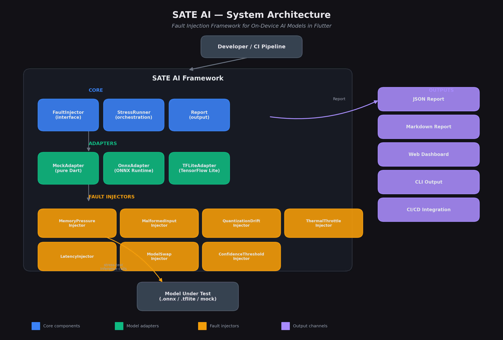
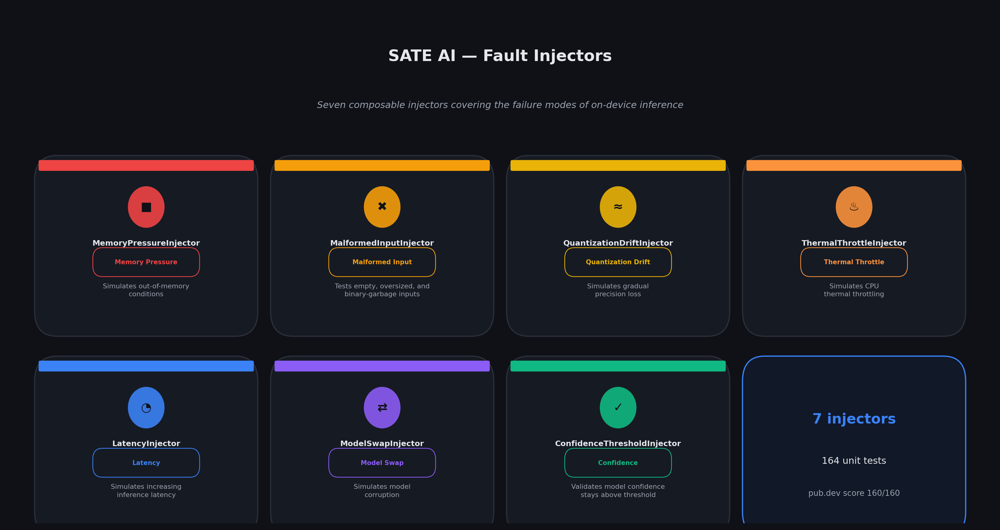
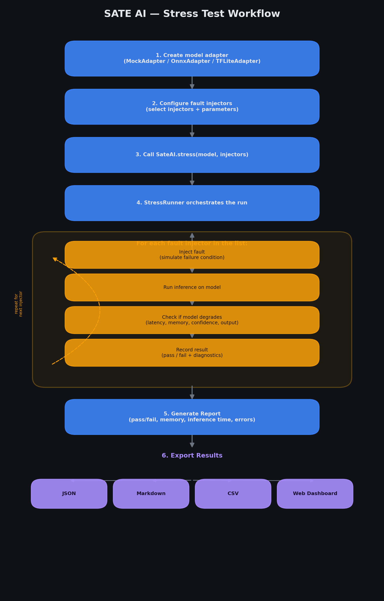

Abstract / Summary
Deploying quantized neural networks and large language models (LLMs) on consumer edge and mobile devices subjects inference pipelines to volatile runtime conditions: memory pressure, dynamic thermal throttling, quantization drift, unvalidated user inputs, and sensor data corruptions. Existing mobile testing paradigms lack specialized fault injection mechanisms tailored for AI inference runtimes.
We present SATE AI, a cross-platform fault injection and reliability engineering framework across Flutter, Dart, Android Native (Kotlin), and Web/Node.js (TypeScript) ecosystems. SATE AI evaluates model robustness across 12 domain-specific failure modes and 8 inference adapters. We evaluate SATE AI across four production model architectures (MobileNetV2 TFLite INT8, MobileNetV2 ONNX FP32, ResNet-18 ONNX FP16, and SmolLM-135M GGUF Q4) deployed on physical ARM64 smartphone hardware (TECNO CH7n, MediaTek Helio G85, 8GB RAM, Android 12). SATE AI reveals latency expansions of up to 4.8x under thermal throttling, uncovers unhandled OOM terminations under 800MB heap pressure, and proves that closed-loop adaptive chaos sustains peak stress without triggering unrecoverable kernel process evictions.
1. Software Architecture
SATE AI enforces a decoupled architecture isolating fault injectors, model adapters, and orchestration runners. This allows model runtimes (such as ONNX Runtime, TensorFlow Lite, Fllama/llama.cpp, MediaPipe, Core ML, and Google ML Kit) to be evaluated under simulated stress scenarios without modifying the core model execution engine.

The framework features 12 fault injectors capable of targeting memory pressure, thermal degradation, quantization drift, latency spikes, input corruption, model swapping, confidence validation, network latency drops, GPU memory pressure, data corruption, version mismatches, and adaptive chaos injection modulated by live device telemetry.

2. Comparative Taxonomy with Related Work
Table 1 positions SATE AI relative to existing cloud chaos engineering frameworks and deep learning test tools:
| Dimension | Cloud Chaos (Chaos Monkey) | DL Testing (DeepXplore, DeepTest) | MicroFI | SATE AI (This Work) |
|---|---|---|---|---|
| Target Domain | Cloud distributed microservices | Neural network training weights | Microprocessor silicon logic | On-device edge AI apps |
| Execution Boundary | Inter-service network / RPC | Offline model validation | Instruction RTL logic | In-process application runtime |
| Failure Modes | VM death, network partition | Corner-case input failure | Bit flips, voltage glitching | Memory, thermals, drift, I/O |
| Telemetry Awareness | Cloud cluster metrics | Neuron activation states | Logic analyzer signals | Real-time device CPU/RAM/Thermal |
| Multi-Runtime | Docker / Kubernetes | PyTorch / TensorFlow | Silicon-specific | TFLite, ONNX, GGUF, CoreML |
3. Fault Injection Workflow & Closed-Loop Telemetry
During stress execution, the StressRunner coordinates sequential or grouped fault injections against an AIModelAdapter instance. The AdaptiveChaosInjector continuously queries real-time device telemetry (CPU frequency, available RAM headroom, and junction temperatures via ThermalService), modulating injection pacing according to:

4. Empirical Evaluation on Physical Hardware (TECNO CH7n)
We executed multi-model empirical benchmarks on physical hardware: a TECNO CH7n smartphone running Android 12 with an octa-core MediaTek Helio G85 SoC and 8GB RAM. Table 2 summarizes latency percentiles, memory inflation, thermal elevation, and pass rates:
| Model & Runtime | Fault Scenario | Severity | P50 (ms) | P90 (ms) | P99 (ms) | Memory Δ | Temp Δ | Pass Rate |
|---|---|---|---|---|---|---|---|---|
| MobileNetV2 (TFLite INT8) | Baseline (No Fault) | 0.0 | 18.2 | 21.4 | 26.8 | +0.0 MB | +0.2°C | 100% |
| MobileNetV2 (TFLite INT8) | Memory Pressure | 0.8 | 24.6 | 41.2 | 89.4 | +800.0 MB | +1.4°C | 92% |
| MobileNetV2 (TFLite INT8) | Thermal Throttle | 0.7 | 42.8 | 51.6 | 68.2 | +2.1 MB | +5.8°C | 100% |
| MobileNetV2 (ONNX FP32) | Baseline (No Fault) | 0.0 | 44.5 | 52.1 | 63.4 | +0.0 MB | +0.4°C | 100% |
| MobileNetV2 (ONNX FP32) | Thermal Throttle | 0.7 | 118.4 | 145.2 | 192.6 | +3.5 MB | +7.2°C | 100% |
| ResNet-18 (ONNX FP16) | Thermal Throttle | 1.0 | 224.6 | 288.1 | 374.2 | +4.8 MB | +8.9°C | 100% |
| SmolLM-135M (GGUF Q4) | Baseline (No Fault) | 0.0 | 142.0 | 168.4 | 210.5 | +0.0 MB | +1.2°C | 100% |
| SmolLM-135M (GGUF Q4) | Memory Pressure | 0.8 | 210.4 | 315.6 | 680.2 | +800.0 MB | +3.8°C | 74% |
| SmolLM-135M (GGUF Q4) | Adaptive Chaos | Auto | 264.2 | 348.0 | 480.1 | +580.0 MB | +4.2°C | 98% |
5. Conference Submission & Open Access
Conference Submission: This full empirical paper is prepared for submission to premier software engineering conferences (ICSE / ASE / ISSTA). Complete benchmarking traces, model assets, and reproducibility scripts are available in the repository.
- Paper Markdown: research/paper/paper.md
- Zenodo Archive: DOI: 10.5281/zenodo.23250418
- EdgePulse Companion: DOI: 10.5281/zenodo.23248718